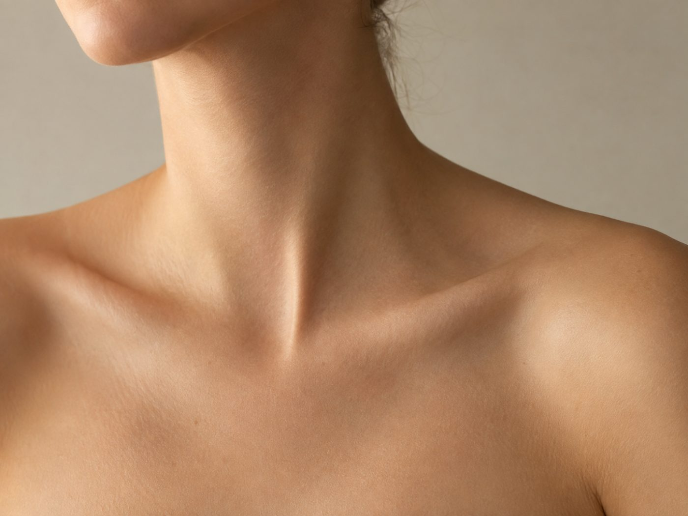
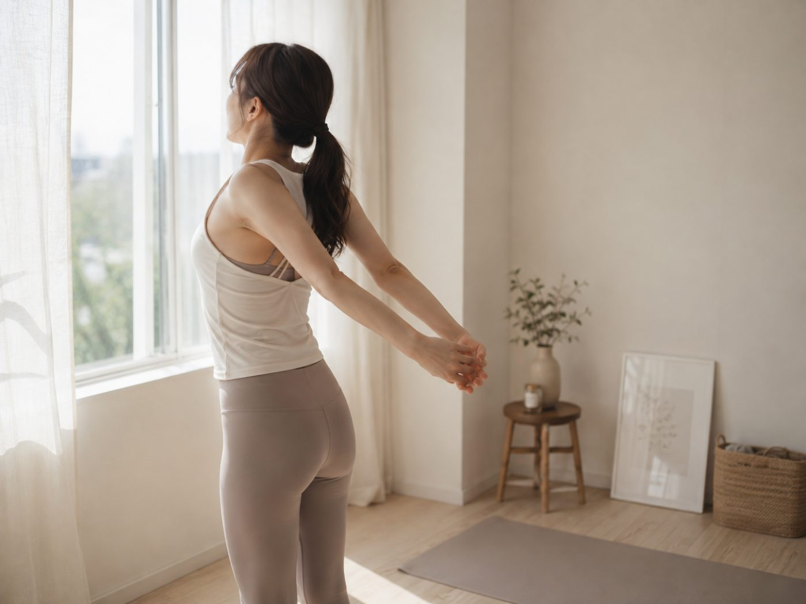

SHOULDER
鍛えるのではなく、
位置を戻す。
肩を出すドレスで見られるのは、肩そのものより鎖骨のラインと肩の位置です。ここは筋トレより姿勢の問題で、短期間で変わります。

先に結論です。肩が前に入っている状態を戻すだけで、鎖骨が出て首が長く見えます。3週間あれば変わります。逆に肩の筋肉をつけようとすると、いかり肩になって華奢に見えなくなります。
肩が綺麗に見えない原因
| 原因 | 見え方 | 変わる期間 |
|---|---|---|
| 肩が前に入っている | 鎖骨が埋まる。首が短く見える | 2〜3週間 |
| 肩が上がっている | 首が詰まって見える | 数日 |
| 肩甲骨が離れている | 背中が丸く見える | 3〜4週間 |
| むくみ | 全体がぼやける | 数日 |
| 骨格 | — | 変わりません |
上の4つはすべて位置の問題です。骨の形は変えられませんが、位置は戻せます。

肩を後ろに引いて胸を開く
いま確認できること
鏡の前に立って、手のひらの向きを見てください。手の甲が正面を向いていたら、肩が内側に回っています。本来は親指が前を向く位置です。
そのまま肩を後ろに引いて、手のひらを前に向けてください。鎖骨のラインが出て、首が長く見えるはずです。これが「戻した状態」です。
戻すためにやること
- 1日に何度か肩を後ろに引く。回数より頻度です。思い出したときにやってください
- 胸の前を伸ばす。肩が前に入る原因は胸の筋肉が縮んでいることです。壁に手をついて体をひねります
- スマホを見る姿勢を変える。下を向く時間が長いほど戻ります。目線の高さに上げてください
- 寝るときの姿勢。横向きで丸まると翌朝固まります
巻き肩の詳しい直し方は巻き肩のページに。
やってはいけないこと
肩の筋肉をつけようとしないでください。肩の上部が発達すると、いかり肩になって華奢な印象が消えます。ドレスで求められるのは筋肉量ではなく位置です。
また、痩せて鎖骨を出そうとするのも逆効果です。骨が浮くほど落とすと、疲れて見えます。鎖骨は痩せて出すのではなく、位置を戻して出すものです。
見てもらうほうが早い場合
肩と背中は自分では見えません。姿勢の崩れ方は人によって違うので、猫背なのか反り腰なのかで、やるべきことが変わります。ここは自己判断が最も外れる部分です。


base BODY
体験3,000円理学療法士が骨格から見て運動プログラムを組むパーソナルジム。肩こりや猫背のように「痛みや歪みが先にある」状態を扱います。姿勢を直したいが自己流のトレーニングで悪化した経験がある場合の選択肢。1回のみの体験と通い放題の体験があります。
体験トレーニングを申し込む ＞当日に効くこと
式の当日、写真を撮られる瞬間に肩を後ろに引いて胸を開く。これだけで写真が変わります。準備期間に何もできなかった場合でも、これは効きます。
朝の手順はむくみを引かせる手順にまとめています。
次に読む